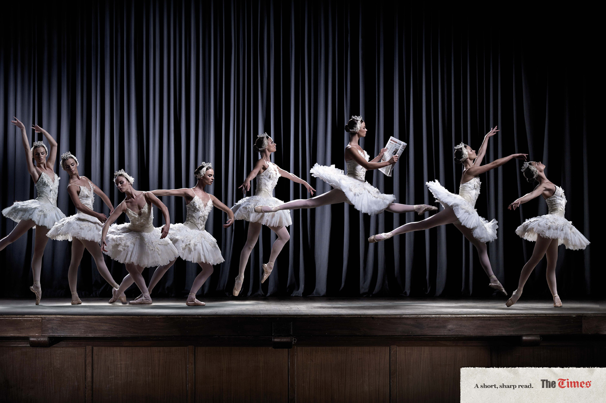
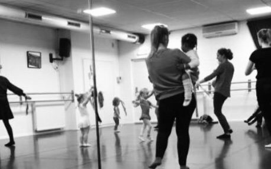
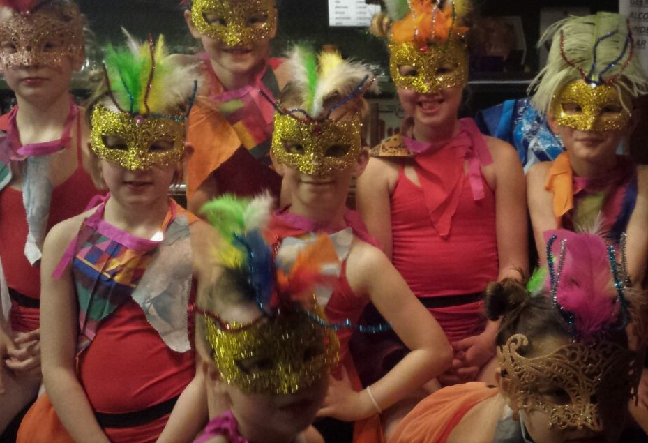

Seizoen '21/'22
 Gelukkig mogen we weer dansen in de studio. Fijn om jullie weer te verwelkomen!
Wil je ook een keer ervaren hoe leuk dansen is? Doe een gratis proefles. Instromen is mogelijk.
Gelukkig mogen we weer dansen in de studio. Fijn om jullie weer te verwelkomen!
Wil je ook een keer ervaren hoe leuk dansen is? Doe een gratis proefles. Instromen is mogelijk.
Vraag een gratis proefles aan via babs@babsballetschool.nl
Nieuwsbrief
 Nieuwsbrief 2 is op 16 januari j.l per mail naar iedereen verstuurd. Heeft u deze niet of niet goed ontvangen? vraag hem aan via babs@babsballetschool.nl
Peuter danscursus
 Maandag 10:00 uur Voor de kleinste dansertjes vanaf 2 jaar hebben we een korte cursus (12x) Peuterdans, op maandagochtend dansen zij samen met een ouder of grootouder door de zaal. Behalve dat het erg leuk en gezond is, is het ook goed voor de coordinatie en motorische ontwikkeling en leren de kindjes over muziek, samen dansen en zichzelf ontdekken. Gestart op 17 januari; instromen is nog mogelijk!
Corona Virus
 In de dansstudio hoeven we geen 1,5 meter afstand meer te houden maar we houden het virus wel graag weg uit de studio, blijf dus a.u.b. thuis als je klachten hebt.
In de dansstudio hoeven we geen 1,5 meter afstand meer te houden maar we houden het virus wel graag weg uit de studio, blijf dus a.u.b. thuis als je klachten hebt.
We hanteren de Corona maatregelen, ook bij ons moet iedereen van 18 jaar en ouder bij binnenkomst een QR coronacheck tonen. Wij zorgen voor ventilatie, een gedesinfecteerde barre, en desinfecterende handgel.
Zo houden we het samen gezond en gezellig.
Bedankt en tot dans!
Carnaval
 In de week van 21 t/m 25 februari mogen de leerlingen ivm de Carnaval verkleed naar de les komen. De leerlingen mogen dan ook een zelf gemaakte dans laten zien in de les. 28 februari t/m 4 maart is het Carnavalsvakantie. Er zijn dan geen lessen.
Ballet Spelletje Balletris
 Typ deze code in op je toetsenbord: ⬆⬆⬇⬇⬅➡⬅➡ ba
Typ deze code in op je toetsenbord: ⬆⬆⬇⬇⬅➡⬅➡ ba